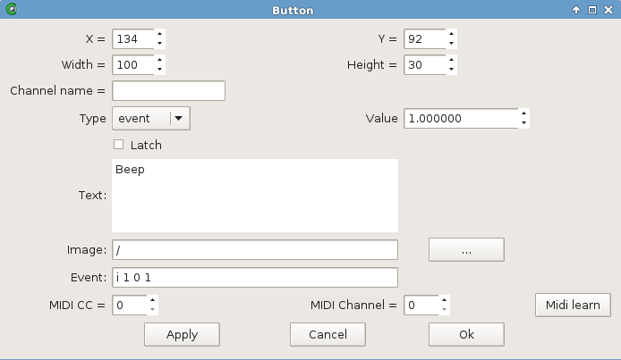
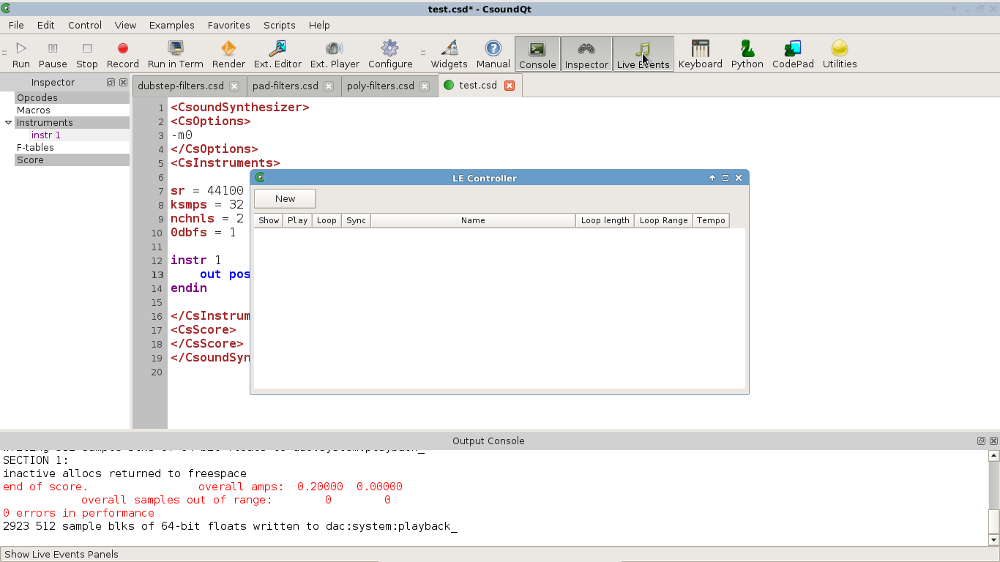
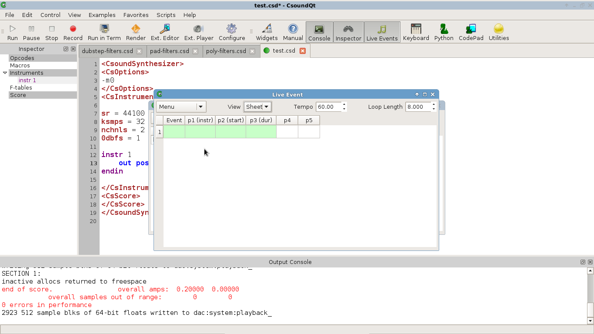
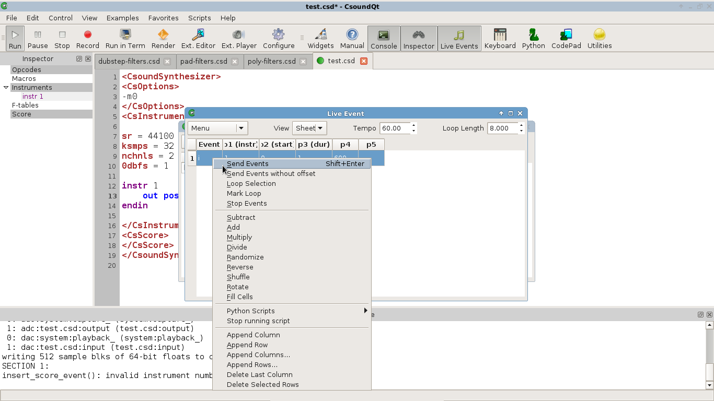
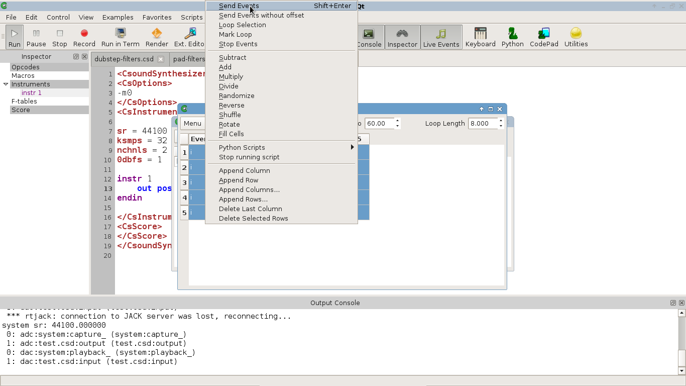

CsoundQt's Live Event Sheets offer a wide range of possibilities to call csound instruments in real time. In "classic mode", Csound code consists of two fixed sections: a collection of instruments (called "orchestra"), and a list of time-based calls of these instruments (called "score"). Each score line which calls an instrument instance for a certain time, is called an "instrument event".
Instead of deciding these events in advance and writing them in a fixed score, Csound offers many ways to fire instrument events in real time. One is the usage of a MIDI keyboard, which by default triggers an instrument (any note-on message in MIDI channel 1 triggers an instance of instrument 1, and so on). Another approach is using the Csound API. This means that any application can call and destroy instances of compiled instruments by means of certain methods. This is the way CsoundQt communicates with the Csound engine.
The most simple way of firing live events in CsoundQt is to use a button. Create a button by right-clicking in the widget panel. In the properties, set the button to the "event" mode, and type a score line, for instance:
i 1 0 1 400

Now insert this code as your .csd:
<CsoundSynthesizer>
<CsInstruments>
instr 1
out poscil(.2,p4)
endin
</CsInstruments>
<CsScore>
</CsScore>
</CsoundSynthesizer>
Run Csound (push the "Run" button or choose in the menu Control > Run Csound). Now push the button. You will hear one second of a sine tone with a frequency of 400 Hz. You can change the frequency in the button properties, all while Csound is running.
Note that the CsScore section of the csd file is empty here. With an empty score, Csound will run and wait for any real-time events. If you want to call any instrument in the CsScore section, make sure it runs for a very long time, or insert a statement like e 999999 at the end of the score (this wil run Csound for 999999 seconds).
Actually the Live Event Sheet works similar to firing live instrument events via a CsoundQt button widget. Just it is nicer to type in and it offers additional functionalities, in particular for looping and changing parameter-fields.
To create a Live Event Sheet, push the Live Events button or choose View > Live Events in the menu bar. You get a LE Controller:

Push New, and you get a Live Event Sheet:

Now type a similar line as you did before in the button widget. Right-click anywhere in the line. A sub-menu pops up. Choose the first item Send Events:

You will hear the beep again.
From the same sub-menu, choose Append rows .... Append four new rows and insert some events with sequential start times. Select all rows and again choose Send events:

You hear now the selected instrument events as a sequence. If you choose Loop Selection instead of Send events, the marked section will loop. Set the loop duration and the tempo in the upper part of the Live Event Sheet. Stop the loop with Stop Events, or in the LE Controller by unchecking the loop option.
The pop-up menu offers you also many options to fill the content of a column, or change the present content. Select a column, right-click in any of the fields, and choose Reverse from the middle section of the menu. You will see the values in this column reversed. Similar you can apply the other features, like Multiply, Randomize and others.